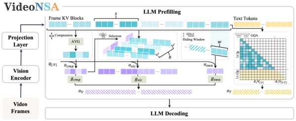
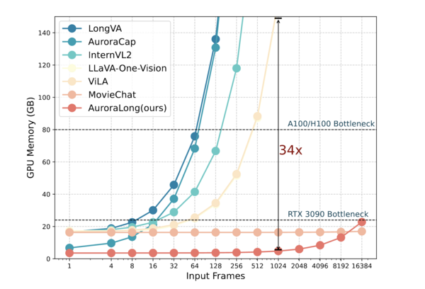

Enxin Song is a Ph.D. student in Computer and Information Science at the University of Pennsylvania, advised by Prof. Jiatao Gu. She received her master's degree from Zhejiang University, and her bachelor's degree from Dalian University of Technology. She has conducted research at New York University with Prof. Saining Xie and at University of California, San Diego with Prof. Zhuowen Tu. Her research centers on video understanding and generative models, with a focus on efficient long-sequence modeling, applications of generative models for text-to-image synthesis, and benchmarking for video understanding. She has co-organized workshops at CVPR 2024 and 2025.
News
- Jan 2026 Our VideoNSA is accepted by ICLR 2026.
- Nov 2025 Selected (top 10%) to give a talk at the KAUST Rising Stars in AI Symposium 2026.
- Oct 2025 Video-MMLU received the Outstanding Paper Award at the ICCV 2025 Knowledge-Intensive Multimodal Reasoning Workshop, along with a travel grant.
- Oct 2025 We release VideoNSA, a hardware-aware native sparse attention mechanism for video understanding.
- Sep 2025 Invited talk at Lambda AI titled From Seeing to Thinking.
- Sep 2025 One paper accepted by ICCV 2025 KnowledgeMR Workshop.
- Aug 2025 Our paper MovieChat+: Question-aware Sparse Memory for Long Video Question Answering is accepted by IEEE TPAMI.
Education
Research Experience
Invited Talks
-
Feb 2026
From Compression to Selection: Better and Longer Video UnderstandingKAUST Rising Stars in AI Symposium, Saudi Arabia
-
Oct 2025
Video-MMLU: A Massive Multi-Discipline Lecture Understanding BenchmarkWorkshop on Knowledge MR at ICCV 2025, Oahu, HI
-
Sep 2025
From Seeing to ThinkingLambda AI (virtual)
Teaching
Selected Honors & Awards
- 2026
-
2025
Outstanding Paper Award, ICCV 2025 Knowledge-Intensive Multimodal Reasoning Workshop
-
2025
Lambda AI Cloud Credits Grant Sponsorship
-
2025
National Scholarship, Zhejiang University
-
2024
National Scholarship, Zhejiang University
-
2021
National Scholarship, Dalian University of Technology
Research Overview
My research centers on video understanding and generative models, with key areas of focus including:
-
Efficient Long-Sequence Modeling
, especially for long video inputs, using techniques like hybrid memory, token compression, RNNs, sparse attention, and linear attention mechanism.
- Applications of Generative Models , with an emphasis on masked image modeling for text-to-image synthesis, and a strong focus on enhancing efficiency in data usage and training.
- Benchmarking and Evaluation , creating complex and meaningful real-world challenges in video domains to probe the boundaries of model capabilities, while providing insights for future enhancement.
Selected Publications and Manuscripts
* Equal contribution.
Also see Google Scholar.





Blog
Occasional writing on research, tools, and things I find interesting.
{% assign sorted_blogs = site.blogs | sort: "date" | reverse %} {% if sorted_blogs.size > 0 %}